| A | B | C | D | E | F | G | H | I | J | K | L | M | N | O | P | Q | |
|---|---|---|---|---|---|---|---|---|---|---|---|---|---|---|---|---|---|
1 | |||||||||||||||||
2 | 監修資料（監修ち提出後にリンクを貼る） | ||||||||||||||||
3 | 項目 | 仕様/補足 | 数量 | 工数 | 画像 | 規格 | アップ先 S3/AB | 画像ID （PLAN側に確認） ！アイテムIDとは違うので記載注意！ | 監修 ステータス | BNE様へ PSDデータ提出 | デザイナー 担当者 | 制作ステータス | 命名規則 ※[ ]内はマスターデータ・運用単位で命名が変化します | ||||
4 | 新規アイテム | ||||||||||||||||
5 | 【カラーメモリー】 | ・ぴえヨンのメモリー | 1 | 0.1 | 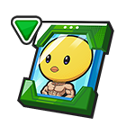 | 150×150 | AB | item_icon_memory_chara_osh_00601 | 監修不要 | 提出不要 | 江村 | | stage_icon_[:asset_key] | ||||
6 | 【ガシャチケット】 | ・【推しの子】SSR確定チケット | 1 | 0.3 | 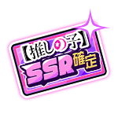 | 150×150 | AB | item_icon_ticket_osh_10000 | 監修中 | 提出不要 | 江村 | | |||||
7 | 汎用【イベントメダル】 | ・いいジャン祭メダル【赤】 | 1 | 0.4 |  | 150×150 | AB | item_icon_item_glo_00001 | 監修不要 | 提出不要 | 江村 | | |||||
8 | ・いいジャン祭メダル【青】 | 1 |  | 150×150 | AB | item_icon_item_glo_00002 | 監修不要 | 提出不要 | 江村 | | |||||||
9 | ・いいジャン祭メダル【緑】 ※【推しの子】施策には使用しないが今後のイベントで汎用的に使用するためまとめて製作する | 1 | 150×150 | AB | item_icon_item_glo_00003 | 監修不要 | 提出不要 | 江村 | | ||||||||
10 | ・いいジャン祭メダル【黄】 ※【推しの子】施策には使用しないが今後のイベントで汎用的に使用するためまとめて製作する | 1 | 150×150 | AB | item_icon_item_glo_00004 | 監修不要 | 提出不要 | 江村 | | ||||||||
11 | エンブレム | ||||||||||||||||
12 | 【降臨バトルエンブレム】 | 最強で無敵のアイドル emblem_icon_adventbattle_osh_season01_00001 | 6 | 0.2 | 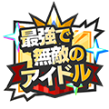 | 120×120 | AB | emblem_icon_adventbattle_osh_season01_00001 | 監修中 | PNG提出必要 | 江村 | | emblem_icon_[:asset_key] | ||||
13 | emblem_icon_adventbattle_osh_season01_00002 | 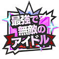 | 120×120 | AB | emblem_icon_adventbattle_osh_season01_00002 | 監修中 | PNG提出必要 | 江村 | | emblem_icon_[:asset_key] | |||||||
14 | emblem_icon_adventbattle_osh_season01_00003 | 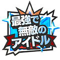 | 120×120 | AB | emblem_icon_adventbattle_osh_season01_00003 | 監修中 | PNG提出必要 | 江村 | | emblem_icon_[:asset_key] | 0 | ||||||
15 | emblem_icon_adventbattle_osh_season01_00004 | 120×120 | AB | emblem_icon_adventbattle_osh_season01_00004 | 監修中 | PNG提出必要 | 江村 | | emblem_icon_[:asset_key] | 0 | |||||||
16 | emblem_icon_adventbattle_osh_season01_00005 | 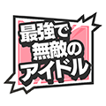 | 120×120 | AB | emblem_icon_adventbattle_osh_season01_00005 | 監修中 | PNG提出必要 | 江村 | | emblem_icon_[:asset_key] | |||||||
17 | emblem_icon_adventbattle_osh_season01_00006 | 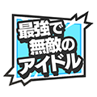 | 120×120 | AB | emblem_icon_adventbattle_osh_season01_00006 | 監修中 | PNG提出必要 | 江村 | | emblem_icon_[:asset_key] | |||||||
18 | 【イベントエンブレム】 | 星野 アクア -> 嘘吐き emblem_icon_event_osh_00001 どんなデザインか詳細が不明なので確認したいです！ アクアの目をベースに、黒い星を目立たせる感じにしたいです。 黒い星の飛び出かたは、ルビーを参考に https://youtu.be/c7E-tgmFuzw?t=47 | 1 | 1 | 120×120 | AB | emblem_icon_event_osh_00001 | 監修中 | PNG提出必要 | 江村 | | emblem_icon_[:asset_key] | |||||
19 | B小町 emblem_icon_event_osh_00002 企画書の参考画像が実写関連のものだったので原作準拠ではないところが気に掛かっている | 1 | 1 | 120×120 | AB | emblem_icon_event_osh_00002 | 監修FB対応中 | PNG提出必要 | 江村 | | emblem_icon_[:asset_key] | ||||||
20 | アイ推し！ emblem_icon_event_sur_00003 文字エンブレム | 1 | 1 | 120×120 | AB | emblem_icon_event_osh_00003 | 監修中 | PNG提出必要 | 江村 | | |||||||
21 | ルビー推し！ emblem_icon_event_sur_00004 文字エンブレム | 1 | AB | emblem_icon_event_osh_00004 | 監修中 | PNG提出必要 | 江村 | | |||||||||
22 | MEMちょ推し！ emblem_icon_event_sur_00005 文字エンブレム | 1 | AB | emblem_icon_event_osh_00005 | 監修中 | PNG提出必要 | 江村 | | |||||||||
23 | 有馬かな推し！ emblem_icon_event_sur_00006 文字エンブレム | 1 | AB | emblem_icon_event_osh_00006 | 監修中 | PNG提出必要 | 江村 | | |||||||||
24 | 黒川 あかね推し！ emblem_icon_event_sur_00007 文字エンブレム | 1 | AB | emblem_icon_event_osh_00007 | 監修中 | PNG提出必要 | 江村 | | |||||||||
25 | 筋肉推し！ emblem_icon_event_sur_00008 文字エンブレム | 1 |  | AB | emblem_icon_event_osh_00008 | 監修中 | PNG提出必要 | 江村 | | ||||||||
26 | ※MTGの際にアクアの推しエンブレムを作るかどうか、といった話が出ていたんですが一旦そんなに工数かからなかったので作成だけしました。不要だったら使わなくても大丈夫です！あと筋肉推しの他に念のためぴえヨン推しの方でもデザインを作っています。使用したい方で使用いただければと…！ | 1 | AB | emblem_icon_event_osh_00009 | 監修中 | PNG提出必要 | 江村 | | |||||||||
27 | アイのサイン （サイン部分のみ） | 1 | 1 | AB | emblem_icon_event_osh_00010 | 監修FB対応中 | PNG提出必要 | 江村 | | ||||||||
28 | ※メインクエスト用 | IPロゴエンブレム | 1 | 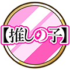 | AB | emblem_icon_normal_osh_00001 | 監修中 | PNG提出必要 | 江村 | | |||||||
29 | 原画のかけら | ||||||||||||||||
30 | 【原画のかけら】 | 【原画のかけら】a+b ①絶対ママみたいになるんだ！ ※参照先：2巻:041P artwork_event_osh_0001 | 2×2 | 0.2 | 524×524 154×154 | AB | artwork_event_osh_0001 | 監修不要 | 提出不要 | 江村 | | artwork_[:asset_key]a artwork_[:asset_key]b | |||||
31 | ②覆面筋トレ系ユーチューバー ※参照先：3巻:032P artwork_event_osh_0002 | 524×524 154×154 | AB | artwork_event_osh_0002 | 監修不要 | 提出不要 | 江村 | | |||||||||
32 | ※メインクエスト用 | ③激バズ！本能のヲタ芸！ ※参照先：3巻:032P | 0.2 | artwork_osh_0001 | 監修不要 | 提出不要 | 江村 | | |||||||||
33 | ④やっと言えた ※参照先：3巻:032P | artwork_osh_0002 | 監修不要 | 提出不要 | 江村 | | |||||||||||
34 | ⑤いってきます ※参照先：3巻:032P | artwork_osh_0003 | 監修不要 | 提出不要 | 江村 | | |||||||||||
35 | プレハブ関連 | ||||||||||||||||
36 | 【コンテンツTOP】プレハブ | 【コンテンツTOP】 プレハブ ・アイ・アクア・ルビーは必須、入れられるならその他主要キャラをお願いします。（かな・あかね・ぴえヨン） もし可能なら、アイセンター配置でお願いします。 ・B小町イメージで華やかな感じでお願いします。 ※以前村松さんに伺った内容を記載しています ・プレハブ内にテキストを配置するお話をMTGで聞いていたので、テキスト内容を記載いただけると助かります！ →いいジャン祭メダルを集めて、豪華報酬GET!! | 1 | 2 | 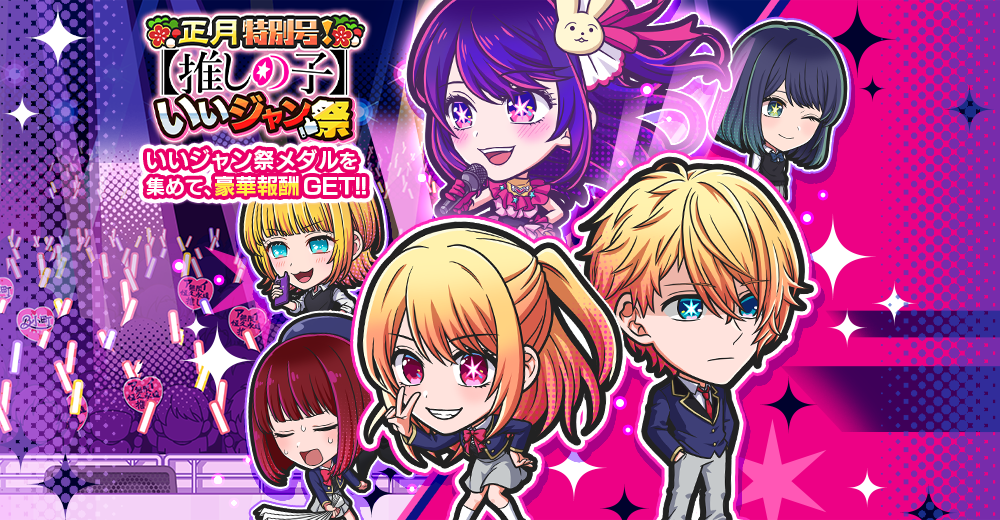 | プレハブ （画像は1000 × 520） | AB | event_osh_00001_quest_select | 監修中 | PNG/PSD提出必要 ※監修提出前にBNE側にPSDを提出 | 江村 | | [:asset_key]_quest_select ※プレハブ名 | ||||
37 | 【クエストバナー】デイリー | 【コンテンツTOP】 ・プリズム ※報酬変わるかも→コインになりました…！すみません…！ クエストバナーの背景は使用されるステージに合わせていたのでステージが知れると嬉しいです(今までは仕様書内の記載内容から判断して作っていました)→確認します！！ | 1 | 0.1 | 334×115 | AB | osh1_1day_quest_select_cell | 監修中 | PNG提出必要 | 江村 | | [:mst_quest.asset_key]_quest_select_cell | |||||
38 | 【クエストバナー】ストーリー1 | 【コンテンツTOP】 マラソンクエスト ・いいジャン祭メダル【赤】 | 1 | 0.1 | 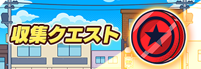 | 334×115 | AB | osh1_charaget01_quest_select_cell | 監修中 | PNG提出必要 | 江村 | | [:mst_quest.asset_key]_quest_select_cell | ||||
39 | 【クエストバナー】ストーリー2 | 【コンテンツTOP】特訓クエスト | 1 | 0.1 | 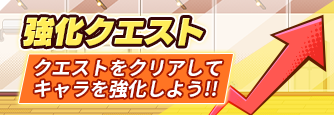 | 334×115 | AB | osh1_charaget02_quest_select_cell | 監修中 | PNG提出必要 | 江村 | | [:mst_quest.asset_key]_quest_select_cell | ||||
40 | 【クエストバナー】チャレンジ | 【コンテンツTOP】 Sバナーチャレンジ ・星野 ルビーのかけら ・MEMちょのかけら ・有馬かなのかけら ・黒川 あかねのかけら ・アイのかけら ・星野 アクアのかけら | 1 | 0.1 | 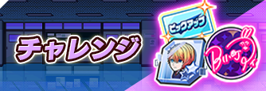 | 334×115 | AB | osh1_challenge01_quest_select_cell | 監修中 | PNG提出必要 | 江村 | | [:mst_quest.asset_key]_quest_select_cell | ||||
41 | 【クエストバナー】高難度 | 【コンテンツTOP】 Sバナー高難度 ・エンブレム「嘘吐き」 ・エンブレム「B小町」 ・プリズム | 1 | 0.1 | 334×115 | AB | osh1_savage_quest_select_cell | 監修中 | PNG提出必要 | 江村 | | [:mst_quest.asset_key]_quest_select_cell | |||||
42 | 【ステージサムネール】 個数やIDなど不明だったので記載のほどお願いいたします…！ →ステージサムネでキャラ関連を使用しないので、今回はなしでOKです！が、いいジャン祭メダル【赤】を使おうと思っているのでそれが要りますよね多分、、 ↑これは嘘です | 9 | 0.3 | 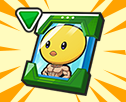 | 126×102 | AB | いいジャン祭メダル【赤】 stage_icon_general_exchange_00001 いいジャン祭メダル【青】 stage_icon_general_exchange_00002 いいジャン祭メダル【緑】 stage_icon_general_exchange_00003 いいジャン祭メダル【黄】 stage_icon_general_exchange_00004 ぴえヨンのメモリー stage_icon_event_osh1_00001 星野 ルビーのかけら stage_icon_event_osh1_00002 MEMちょのかけら stage_icon_event_osh1_00003 有馬かなのかけら stage_icon_event_osh1_00004 黒川 あかねのかけら stage_icon_event_osh1_00005 アイのかけら stage_icon_event_osh1_00006 星野 アクアのかけら stage_icon_event_osh1_00007 【推しの子】SSR確定チケット stage_icon_event_osh1_00008 B小町エンブレム stage_icon_event_osh1_00009 嘘吐きエンブレム stage_icon_event_osh1_00010 アイのサインエンブレム stage_icon_event_osh1_00011 | 監修不要 | 提出不要 | 江村 | | stage_icon_[:asset_key] | |||||
43 | 【クエストバナー】メインクエスト | 図鑑で表示されているものと同じ | 1 | 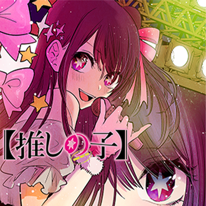 | quest_image_osh_1 | 監修不要 | | 江村 | | ||||||||
44 | 【ステージサムネイル】1話 | ※参照先：1巻:008P | 1 | stage_icon_osh_normal_01 | 監修不要 | | 江村 | | |||||||||
45 | 【ステージサムネイル】2話 | ※参照先：1巻:086P | 1 | stage_icon_osh_normal_02 | 監修不要 | | 江村 | | |||||||||
46 | 【ステージサムネイル】3話 | ※参照先：1巻:213P | 1 | stage_icon_osh_normal_03 | 監修不要 | | 江村 | | |||||||||
47 | バナー類 | ||||||||||||||||
48 | 【イベントミッションバナー】ログインボーナス | 【お知らせ】ログインボーナス_Mバナー 【推しの子】 いいジャン祭 特別ログインボーナス ・星野 ルビー ・星野 アクア ・カラーメモリー何色か指定いただきたいです！ →ちょっと特殊なんですが、カラーメモリーを外して「賀正ガシャチケット 2026」に変更できるでしょうか…！ | 1 | 0.4 | 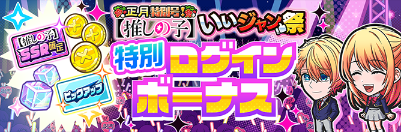 | 668×220 | AB | event_osh_00001_loginbonus | 監修中 | PNG提出必要 | 江村 | | [:asset_key]_loginbonus | ||||
49 | 【イベントミッションバナー】ミッション | 【推しの子】 いいジャン祭特別ミッション 「特別ミッション」で名称は今後固定 【お知らせ】ミッション_Mバナー ・有馬かな ・MEMちょ 12/5追記 推しの子の施策のイベントミッションバナーも「謹賀新年ミッションバナー」を使用したいので F49の画像でお願いいたします。 プラン側でのアセットキー制御ができないので 「event_osh_00001_mission」のIDで F49の謹賀新年ミッションバナーをアップロード対応をお願いいたします。 | 1 | 0.4 | 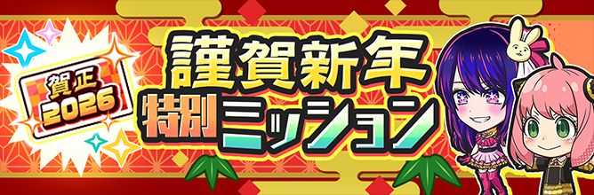 | 668×220 | AB | event_osh_00001_mission | 監修中 | PNG提出必要 | 江村 | | [:asset_key]_mission | ||||
50 | 【イベントTOPバナー】いいジャン祭 | 報酬：変更なし 「【コンテンツTOP】 プレハブ」の要素を流用して作成 | 1 | 0.4 | 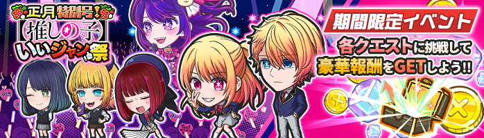 | 698×200 | AB | event_osh_00001_banner | 監修中 | PNG提出必要 | 江村 | | [:asset_key]_banner | ||||
51 | 【お知らせ_Mバナー】いいジャン祭 | 1 | 0.4 | 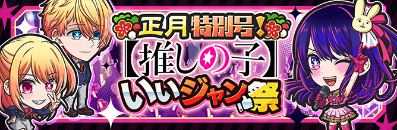 | 668×220 | 不要 | notice_event_osh_00001 | 監修中 | PNG/PSD提出必要 ※監修提出前にBNE側にPSDを提出 | 江村 | | notice_[:png_name] | |||||
52 | 【ホームバナー】いいジャン祭 | 「【お知らせ】いいジャン祭開催お知らせ_Mバナー」を流用して作成 | 1 | 306×100 | S3 | hometop_event_osh_00001 | 監修中 | PNG提出必要 | 江村 | | hometop_[:png_name] | ||||||
53 | 【イベントミッションバナー】ミッション | ぴえヨン特別ブートミッション (必要かどうか不明だったんですが製作しました。不要の場合は使用しなくても大丈夫です！) :kami: | 0.4 | 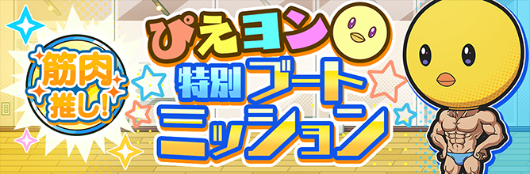 | 668×220 | AB | event_osh_00002_mission | 監修中 | PNG提出必要 | 江村 | | ||||||
54 | 【降臨バトル開催のお知らせ】 | 降臨バトル ファーストライブ キャラ入れる | 0.4 | 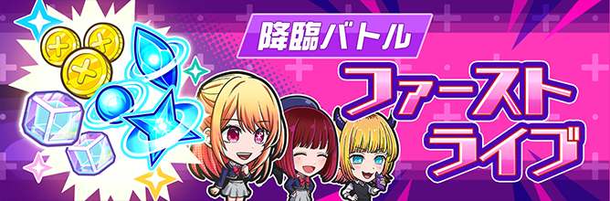 | 668×220 | 不要 | notice_adventbattle_osh_00001 | 監修中 | PNG提出必要 | 江村 | | ||||||
55 | 【お知らせ_Mバナー】 【推しの子】いいジャン祭 交換所 | 【推しの子】いいジャン祭 交換所 何かしら制作がいるものがあるか確認 ->バナーありです！ 片側にいいジャン祭メダル（赤・青）、片側に報酬（【推しの子】SSR確定ガシャチケット、ぴえヨン、プリズム、コイン） 「いいジャン祭メダルを、豪華報酬と交換しよう！」 | 0.4 | 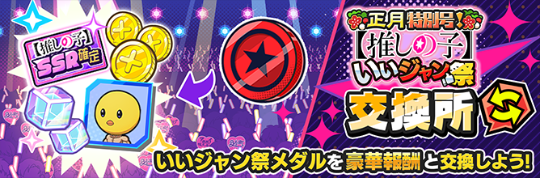 | 668×220 | 不要 | notice_exchange_osh_00001 | 監修中 | PNG提出必要 | 江村 | | ||||||
56 | 交換所TOP用_バナー(698×200) | 【推しの子】のタイミングで追加される機能になります →今後、都度作成必要なバナーになります | 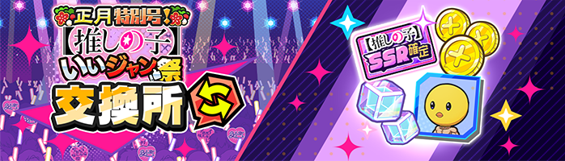 | 698×200 | AB | shop_osh_exchange_00001 | 監修中 | PNG提出必要 | 望月 | | |||||||
57 | 【お知らせ_Mバナー】メインクエスト追加 | 汎用バナー、キャラクターなし →載せたいテキストの内容を記載いただけると助かります！ | 0.5 | 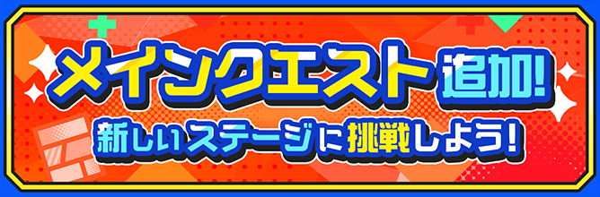 | 668×220 | 不要 | notice_other_00003 | 監修不要 | PNG提出必要 | 望月 | | ||||||
58 | ガシャバナー | ||||||||||||||||
59 | 【ガシャTOP_Lバナー】 正月DXフェスガシャ | ・B小町不動のセンター アイ:UR ※アイとアクアは同時ピックアップでしょうか？ガシャの形式が従来と異なる場合は記載をお願いします →単体ピックアップになる →アイがフェス限になる アクアは通常のピックアップガシャ ガシャ名称等使用が決定したら内容記載いただけると助かります | 1 | 2 |  | 668×370 | S3 | gacha_banner_glo_00002 | 監修中 | PNG提出必要 | 江村 | | gacha_banner_[:banner_url] | ||||
60 | 【お知らせ_Mバナー】 正月DXフェスガシャ | 1 | 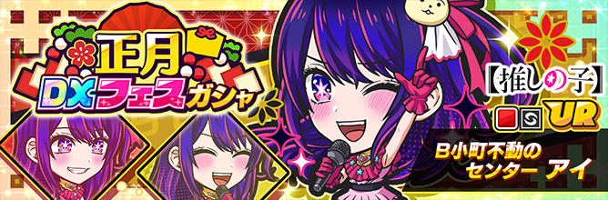 | 668×220 | 不要 | notice_gacha_glo_00002 | 監修中 | PNG提出必要 | 江村 | | gacha_gacha_[:banner_url] | ||||||
61 | 【ホームバナー】 | 1 | 306×100 | S3 | hometop_gacha_glo_00002 | 監修中 | PNG提出必要 | 江村 | アップ済み | hometop_[:png_name] | |||||||
62 | 【ガシャTOP_Lバナー】 【推しの子】いいジャン祭ピックアップガシャ | ・星野 アクア:UR ・IGNもLバナーで行きたい | 1 | 0.7 | 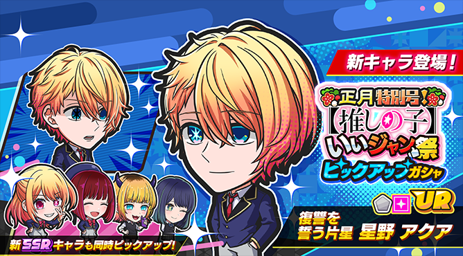 | 668×370 | S3 | gacha_banner_osh_00001 | 監修中 | PNG提出必要 | 江村 | | gacha_banner_[:banner_url] | ||||
63 | 【お知らせ_Mバナー】 【推しの子】いいジャン祭ピックアップガシャ | 1 | 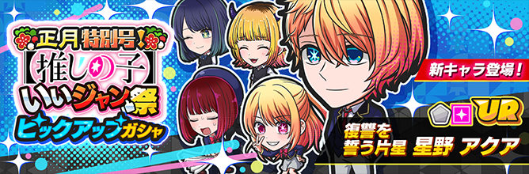 | 668×220 | 不要 | notice_gacha_osh_00001 | 監修中 | PNG提出必要 | 江村 | | gacha_gacha_[:banner_url] | ||||||
64 | 【ホームバナー】 【推しの子】いいジャン祭ピックアップガシャ | 1 | 306×100 | S3 | hometop_gacha_osh_00001 | 監修中 | PNG提出必要 | 江村 | アップ済み | hometop_[:png_name] | |||||||
65 | 【推しの子】SSR確定チケットで引けるガシャが必要？ →賀正ガシャと同じ確認する →「UR1体確定10連ガシャ」と同様でいけるかな。。。 | 【推しの子】SSR確定チケットガシャ" ガシャのラインナップを記載いただけますでしょうか…！ → 星野ルビー、有馬かな、MEMちょ、黒川あかね でお願いします！ | 1 | 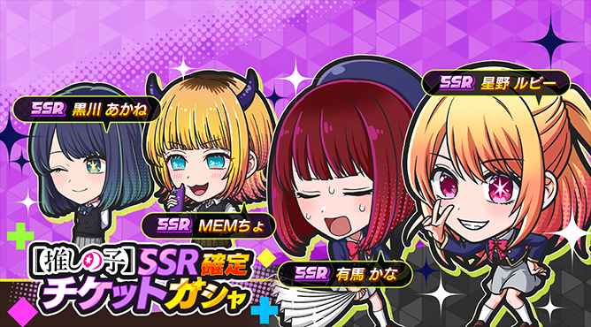 | 668×370 | S3 | gacha_banner_osh_00002 | 監修中 | PNG提出必要 | 江村 | | ||||||
66 | 【お知らせ_Mバナー】 【推しの子】いいジャン祭SSR確定チケットガシャ | 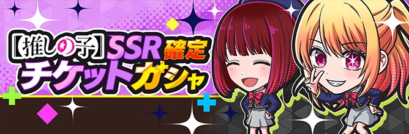 | 668×220 | 不要 | notice_gacha_osh_00002 | 監修中 | | | | ||||||||
67 | （不要）【図鑑_シリーズバナー】 | 1 |  | 300×300 | AB | | | series_banner_[:asset_key] | その他 | 都度 | |||||||
68 | （不要）【図鑑_シリーズロゴ) | 1 |  | 350×245 | AB | | | series_logo_[:asset_key] | その他 | 都度 | |||||||
69 | （不要）クエストバナー降臨バトル | データ設定で済むか要確認 |  | | | ||||||||||||
70 | （不要）いいジャン祭パック | 既存バナーを流用 | 不要かも | | | ||||||||||||
71 | 施策ロゴ_作成とチームメンバーへの共有(一番初めにやる) | 「正月特別号！」の冠をつけられると嬉しいです… 後追いで申し訳ない… | 0.2 | 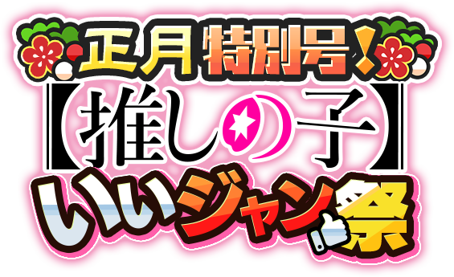 | 不要 | 不要 | 監修不要 | PNG/PSD提出必要 | 江村 | | |||||||
72 | 【推しの子】カウントダウンSNSキャンペーン | Mバナー（IGNでも使用） ⇨Mバナーなので一旦お知らせバナーIDで採番した | 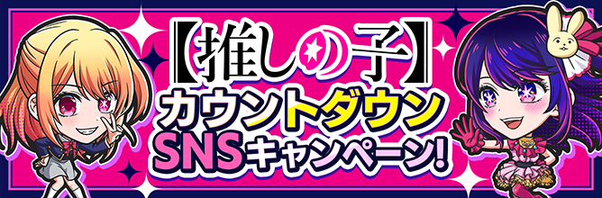 | 668×220 | 不要 | notice_sns_00012 | 監修中 | PNG提出必要 | 江村 | | |||||||
73 | 【推しの子】カウントダウンSNSキャンペーン（アイ） | 【推しの子】参戦まであと5日 キャラ＋フレーバー記載枠＋エンブレム ※エンブレムを外して、LバナーとしてIGN出せるようにすると手間結構かかるかな | 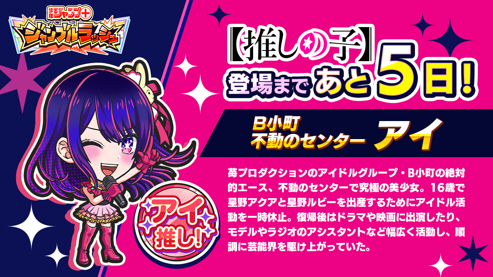 | 1200×675 | 不要 | notice_sns_00013 | 監修中 | PNG提出必要 | 江村 | | |||||||
74 | 【推しの子】カウントダウンSNSキャンペーン（ルビー） | 【推しの子】参戦まであと4日 キャラ＋フレーバー記載枠＋エンブレム ※エンブレムを外して、LバナーとしてIGN出せるようにすると手間結構かかるかな | 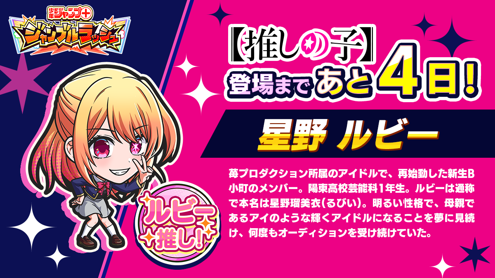 | 1200×675 | 不要 | notice_sns_00014 | 監修中 | PNG提出必要 | 江村 | | |||||||
75 | 【推しの子】カウントダウンSNSキャンペーン（MEMちょ） | 【推しの子】参戦まであと3日 キャラ＋フレーバー記載枠＋エンブレム ※エンブレムを外して、LバナーとしてIGN出せるようにすると手間結構かかるかな | 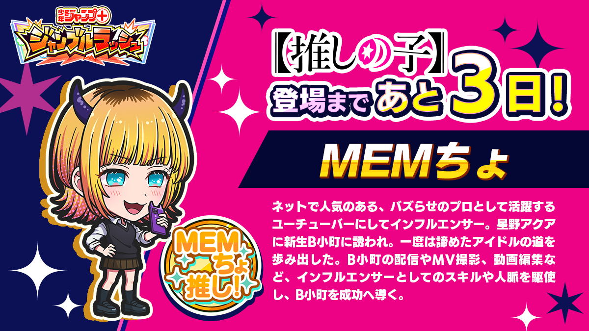 | 1200×675 | 不要 | notice_sns_00015 | 監修中 | PNG提出必要 | 江村 | | |||||||
76 | 【推しの子】カウントダウンSNSキャンペーン（あかね） | 【推しの子】参戦まであと3日 キャラ＋フレーバー記載枠＋エンブレム ※エンブレムを外して、LバナーとしてIGN出せるようにすると手間結構かかるかな | 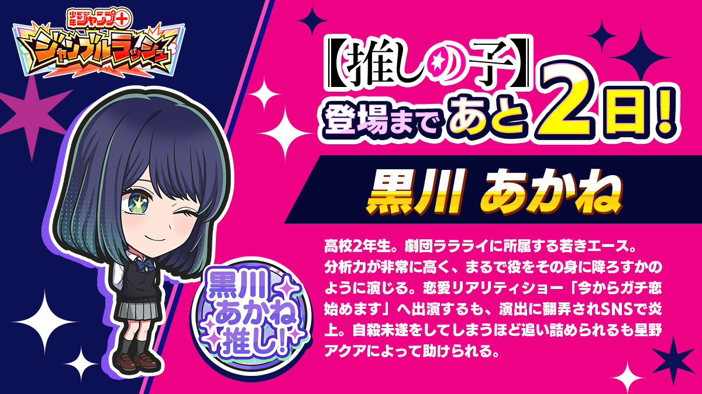 | 1200×675 | 不要 | notice_sns_00016 | 監修中 | PNG提出必要 | 江村 | | |||||||
77 | 【推しの子】カウントダウンSNSキャンペーン（かな） | 【推しの子】参戦まであと1日 キャラ＋フレーバー記載枠＋エンブレム ※エンブレムを外して、LバナーとしてIGN出せるようにすると手間結構かかるかな | 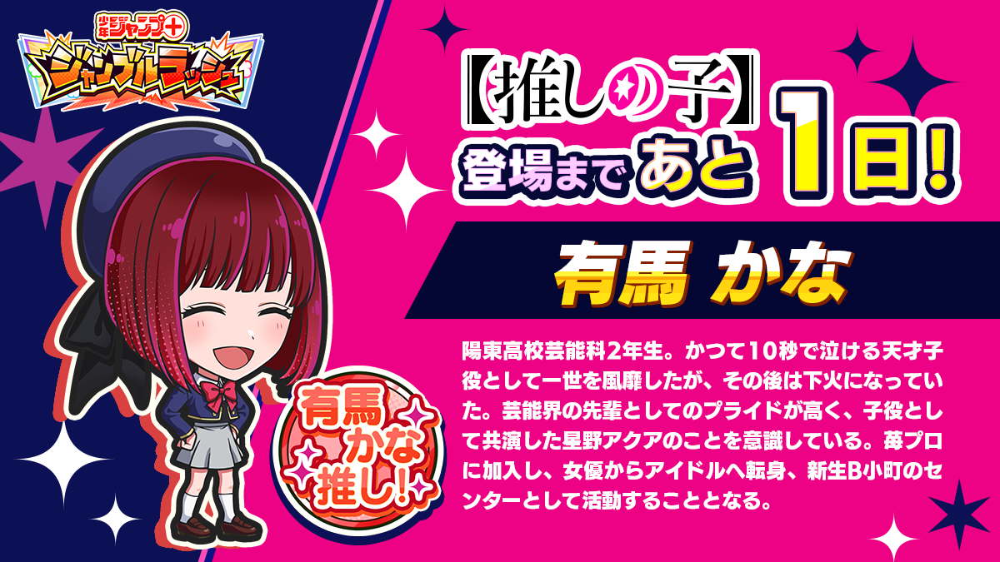 | 1200×675 | 不要 | notice_sns_00017 | 監修中 | PNG提出必要 | 江村 | | |||||||
78 | フェス開催記念特別プレゼント | みかり時の流用 | | ||||||||||||||
79 | 【ガシャTOP_Lバナー】 | 2026年正月記念！UR1体確定ガシャ 仕様は「72時間限定スタートダッシュガシャ」と同じです。 ┗ラインナップはスペシャルガシャと同じ ・ヨル ・リリサ ・カナ ・怪獣8号 | 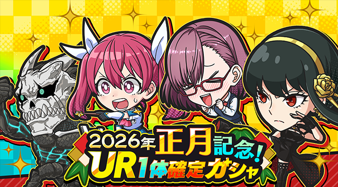 | S3 | gacha_banner_glo_00003 | 監修中 | PNG提出必要 | 江村 | | ||||||||
80 | 【お知らせ_Mバナー】 2026年正月記念！UR1体確定ガシャ | 2026年正月記念！UR1体確定ガシャ | 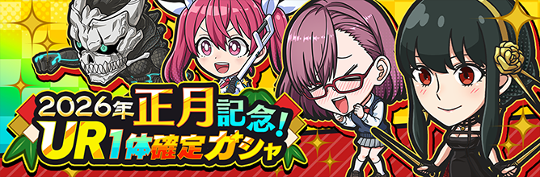 | 不要 | notice_gacha_glo_00003 | 監修中 | PNG提出必要 | 江村 | | ||||||||
81 | 【ホームバナー】 | 不要 | | ||||||||||||||
82 | SNS 新年2026年カウントダウンギフト配布 | SNS 今年もありがとう！感謝を込めてカウントダウン！ 最大プリズム500個プレゼント (12/27から毎日プリズムを配って合計で500個、年末年始ぽく、キャラもなし) | 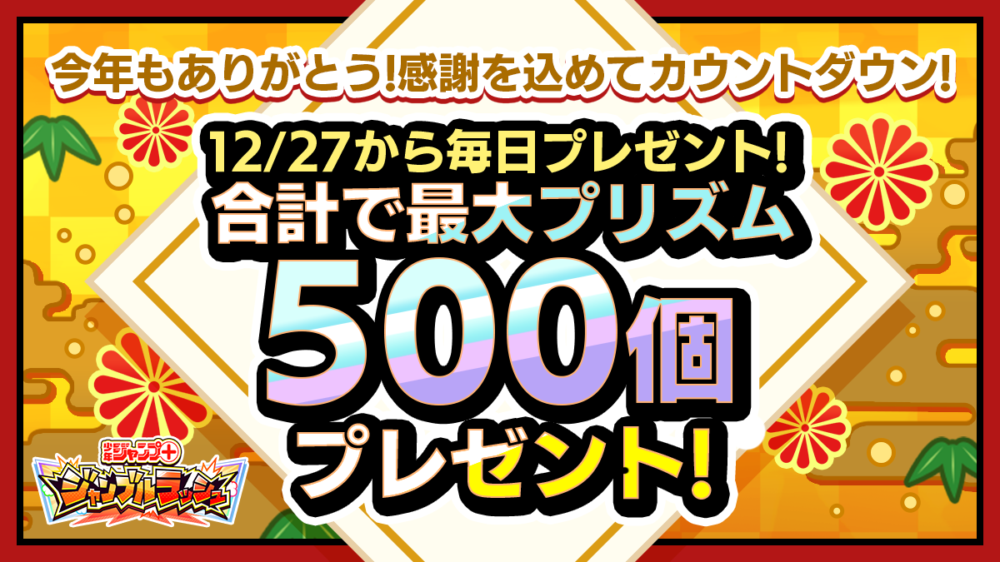 | 1200×675 | 不要 | notice_sns_00018 | 監修不要 | PNG提出必要 | 江村 | | |||||||
83 | 【お知らせ_Mバナー】 新年2026年カウントダウンギフト配布 | M（IGNでも使う） 今年もありがとう！感謝を込めてカウントダウン！ 最大プリズム500個プレゼント (12/27から毎日プリズムを配って合計で500個、年末年始ぽく、キャラもなし) | 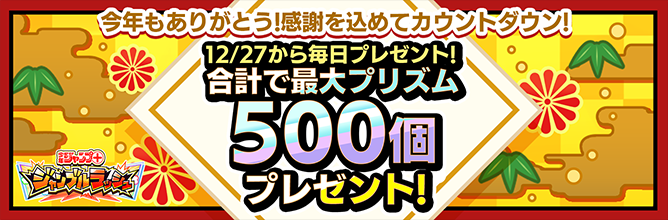 | 668×220 | 不要 | notice_campaign_00012 | 監修不要 | PNG提出必要 | 江村 | | |||||||
84 | | | | ||||||||||||||
85 | 工数の合計値↓ | ||||||||||||||||
86 | 15.4 | | | ||||||||||||||
87 | 江村さん工数 | 14.9 | | | |||||||||||||
88 | 望月さん工数 | 0.5 | | |